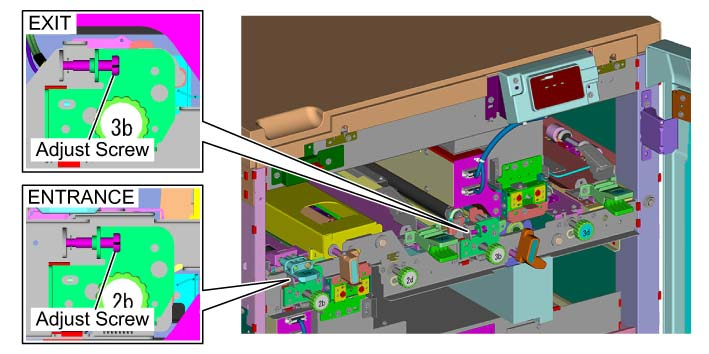
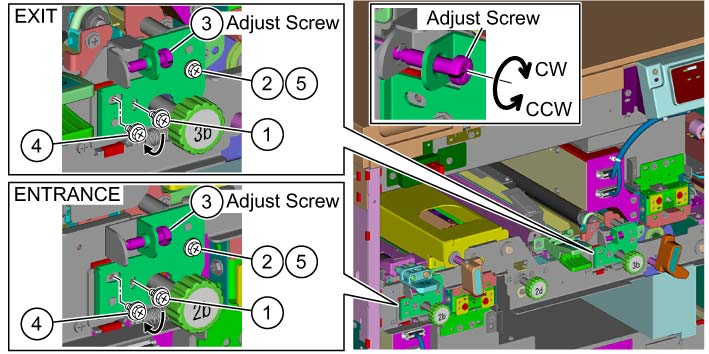

ADJ 76.8.1 Alignment 调整 更换时 SMG 送纸 辊 
目的
执行 调整 纸张 对齐/套准 更换时 SMG 转印 辊 (包括 夹持 和 drive).
[检查]
检查 调整 螺钉 在...上 入口 侧面 和 the 出纸 侧面 在...之前 adjusting.
如果 tip 的 调整 螺钉 不是 in contact 和/与 支架, 转动 调整 螺钉 to bring the tip 的 调整 螺钉 进入 contact 和/与 支架 在执行...之前 the subsequent steps.

(图 1) ism476505
在...上 PC-Diag screen, 选择 [Subsystem 检查].
在...上 Subsystem 检查 Menu screen, 选择 DC809.
选择 [检查 纸张传输].
在...之后 设置 the [纸盘] (纸盘 containing 纸张) 和 the [编号 纸张的 to be adjusted] (5 纸张_标准 纸张 (recommended)_A3), click the [执行] button.
The 调整 目标 和 调整 数量 是 已显示 在...上 检查 纸张传输 screen. 如果 已显示 调整 数量 exceeds +/-0.5, 执行 the 调整 步骤.
如果 结果 shown in 表 1 以下 已显示, the 调整 步骤 已执行 因为 the 调整 数量 exceeds 0.5 仅 在...上 入口 侧面.
调整 调整 目标
调整
EN ILS [编号 of Rotations] (入口 侧面)
0.60
EX ILS [编号 of Rotations] (出纸 侧面)
0.00
调整
如果 调整 数量 exceeds +/-0.5, 调整 支架 位置.
拆卸螺钉 (x1).
松开螺钉 (x1).
旋转 调整 螺钉 (1) by the 调整 数量 已显示 在...之后 checking.
调整 数量 > 0.5: 转动 调整 螺钉 (1) counterclockwise (CCW) by the 调整 数量.
调整 数量 < -0.5: 转动 调整 螺钉 (1) clockwise (CW) by the 调整 数量.
If a 结果 like 表 1 已显示, 旋转 the 调整 螺钉 (1) 在...上 入口 侧面 counterclockwise (CCW) by 0.6 (216 degrees).
更换 螺钉 (1) 该 已 removed in 步骤 (1).

用于 the 第二个/秒 和 subsequent adjustments, 螺钉 (1) removed in 步骤 (1) 安装到 the 位置 replaced in 步骤 (4).
拧紧螺钉 (1) 该 已 loosened in 步骤 (2).

(图 2) ism476506
再次, 返回 检查 步骤 5 和 执行 the 调整 步骤 直到 the 调整 数量 is +/-0.5 or 更少.